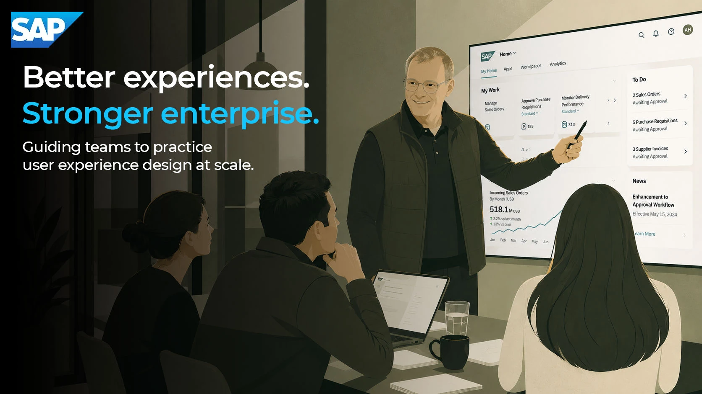
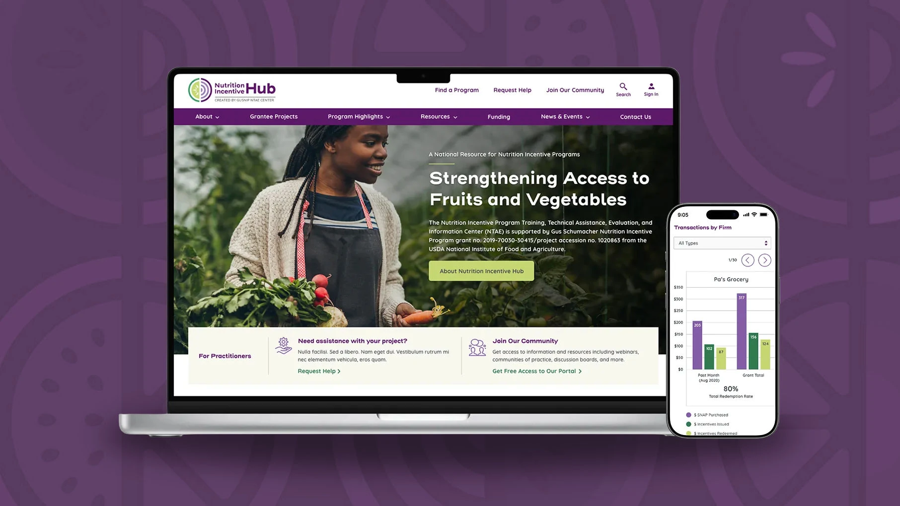
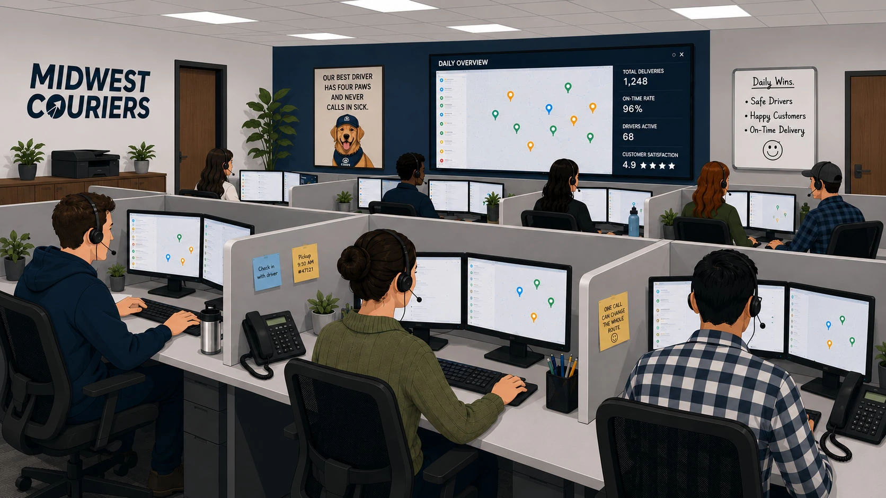
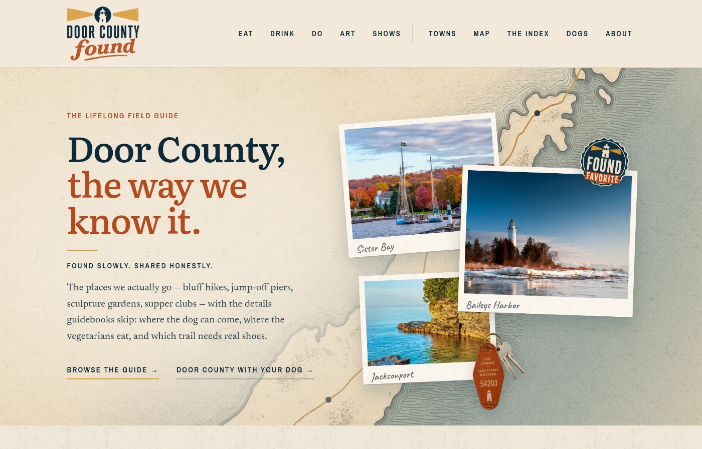
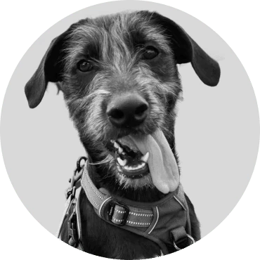

For thirteen years, my job ended at the handoff.
I designed the product. Somebody else built it. Then a specification, and months before anyone could see what survived the translation.
Independent Product Designer
I help product teams untangle complex software, decide what’s worth changing, and carry the clearest direction into a working product.
Selected clients
Most engagements start with a situation, not a request for deliverables. Screens are getting cheap. Decisions are not.

The product grew faster than its structure.

Several teams now solve the same problem differently.

An important initiative exists, but no one senior owns it.

The organization has plenty of ideas and not enough clarity.
A small set that shows the range: enterprise complexity, systems thinking, and products built end to end.




I designed the product. Somebody else built it. Then a specification, and months before anyone could see what survived the translation.
The judgment didn’t change. The distance between thinking and making did. I can try more directions before committing to one, put a working prototype in front of people in days, and build smaller products outright.
Growing is easy. Pruning is the craft. These tools will build whatever you ask for, which makes asking for the right thing the entire game. Twenty years is what tells me which idea earns the effort and which quietly creates three new problems.
The product thinking, the design, and the code, all mine. Not concepts: working products you can open right now. They are also the proof behind the AI engagements: what one experienced person can build, verify, and stand behind. Below them, the identity and illustration work: the same hands, on client work.

For my sister
A regional travel guide where every place is structured data rather than a blog post, so dog-friendly and vegetarian work as real filters instead of tags. I built the product, the identity, and the editing workflow my sister uses to keep it current.

01 Built for one dog in particular

02 Today’s session, already chosen

03 End on a win, next one queued
For Lucy
A mobile app that turns a professional trainer’s handouts into guided sessions you can run with a leash in one hand. One instruction per screen, a live rep tally, hands-free voice, and progress tracked in the levels the trainer already uses. Installs to the phone and works offline.

For myself
A 300mm square hardcover of small essays on attention, time, and being alive. HTML and CSS are the production system and the deliverable is a press-ready PDF, not a website. Of the 174 pictures in it, 95 are photographs I took.
The same four steps, whatever the thing turned out to be.

What the thing should be, what it would take, and whether it should exist at all, decided before anything gets built.

The identity, the voice, the pictures and how they are made, the structure everything hangs on: decided once, so the pages can be quick.

The real thing on a real address early, with the writing, the interaction and the code by the same hand.

The editing workflow, the guide written for the person rather than a developer, and a way to keep it current without me.
Brand identity, character illustration and design systems, for clients from an online mental health startup to Dr Pepper Snapple, plus a living design system for RBA itself. Different scale, same judgment.

Brand identity, badges, and custom illustration for a global innovation network’s internal platform.

The brand foundation behind RBA Consulting’s site: colors, type, and logos with the rules attached, templates and component specs with the numbers underneath.

Complete brand identity, character illustration, and a marketing site for an online mental health platform.

A United Way campaign app that made giving feel like a game: live progress, team leaderboards, and a countdown.
Something here look like the problem you have? Start a conversation.
2005-2013
A hybrid designer and developer, hand-building the interfaces I designed.
2013-2026
An enterprise consultant, making 40+ apps feel like one product.
2026 to now
My own practice, shipping products of my own alongside client work.
Experience is compressed time: decades of pattern recognition, delivered in days. Two case studies, one for each stretch of it.

The longest engagement was not project delivery. It was building and operating a UX practice inside a global enterprise: standards, governance, research, measurement, direction.

Designing and building when those weren’t yet separate roles.
Complicated software is my favorite kind of problem. It took twenty years and two careers to be able to say that.

Craft · 2005-2013I started in graphic and digital design and spent eight years building for the web across three studios, the last five at Pixel Farm as an interactive designer / developer. Two iOS apps, an iPad app for a law firm’s centennial, a boat configurator for Lund, and the front end under a lot of it. Designing and building weren’t separate jobs yet, so I did both, in a room where whoever shipped it sat close enough to argue with.

Systems · 2013-2026The work grew into UX and product design, and then into a dozen years consulting on large enterprise products, for CBRE, Toro, Banner Bank, International Trucks.
That’s where I learned that most design problems are communication problems, and that coherence at scale takes systems: design systems, governance, shared patterns, honest measurement. The longest engagement was building and operating a UX practice inside a global enterprise — some of it explained in public, to a user group with the same problems.

Independent · 2026After thirteen years of consulting inside one firm, I left to run my own practice. The loop has closed back to where it started, and I build again. The difference is what I know now about the parts that get complicated.
Design systems have a third reader now, the AI tools teams build with, and it sees only what the system makes legible. So the tokens live in the code, the design file mirrors them, and the rules are written for that reader as well as for people.
Twenty years is not only a length: the questions that get to the real problem, the structures that make a kickoff work. Those accumulate, and the practice doesn’t need to get bigger to keep getting better at this.
What I still look for is whether the work keeps guiding people long after the project ends. Not whether the deliverables were good, but whether the team is better at this than it was. That’s the test.

(Lucy approves of this message from her curled-up spot nearby)Send me a few sentences about your product and what makes this important now. The first conversation is diagnosis, not a pitch: I will tell you plainly which engagement fits, and if none of them do, I will say so. Agencies and studios: I take senior freelance workstreams too, after thirteen years of delivering through a consultancy. Based in Minneapolis, working remote.
Or write to adam@adamhickey.com directly.